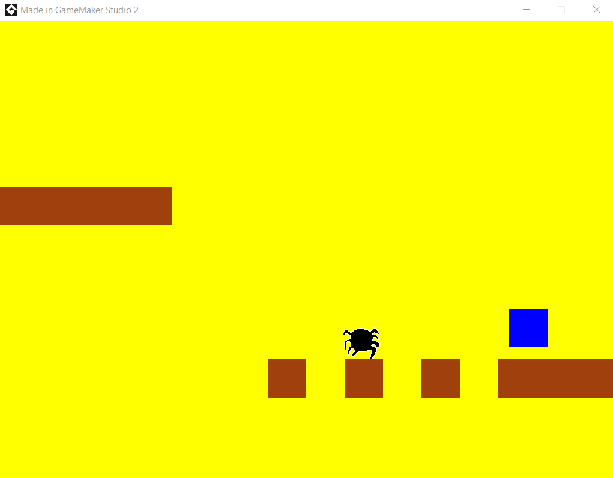
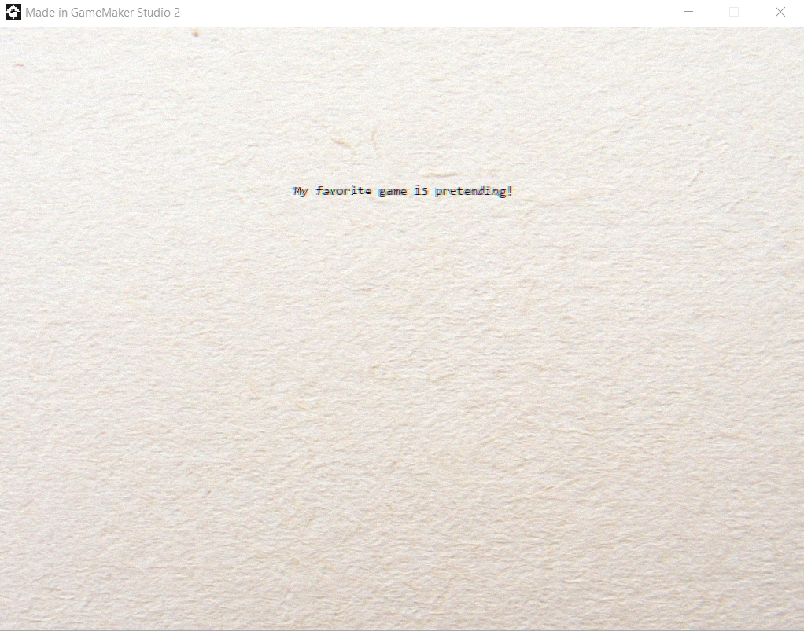
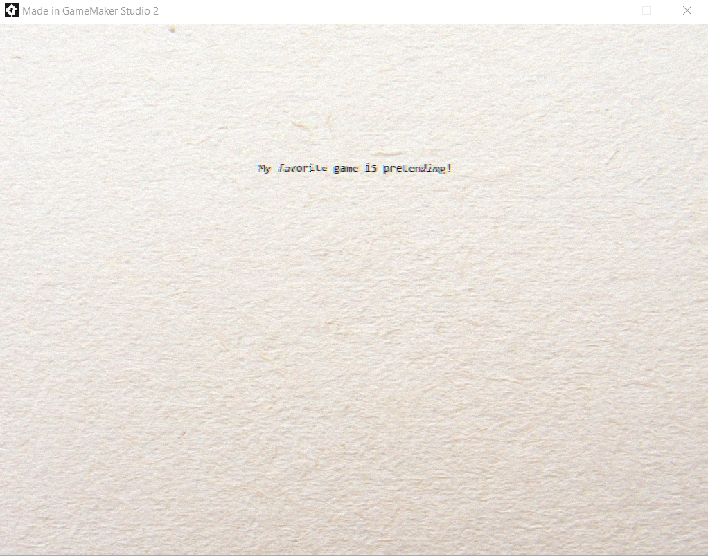
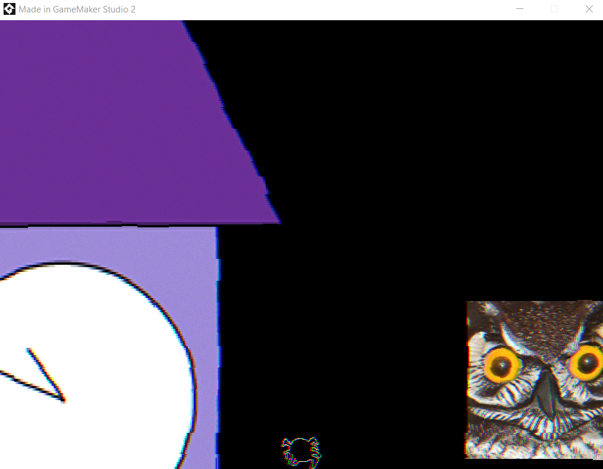
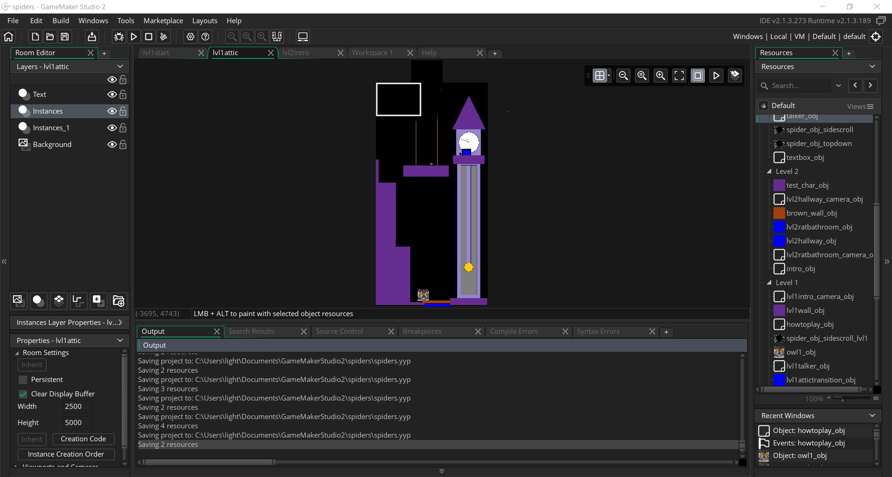
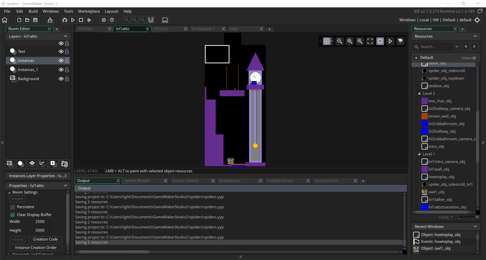

Overhauled level 2 to become sidescrolling levels for showcase

Bugfixing and misc. content fixes.
Final Research DocumentMore playtests, feedback was that the level 2's overworld style wasn't translating properly and diary entries would crash the game on completion.
More bugfixes, changed window size from 1024x768 to 1800x900.
More bugfixes, no new features or content implemented
Asset creation continued. Moving more towards platforming now, and implemented moving platforms in level 1.

Expanded on level 3 to have more rooms, a puzzle, and proper ending
 Research Draft
Research Draft
Initial playtesters stated that the space was interesting, but more could be done to reflect the setting of the story. They liked the aesthetics, but thought some of the assets were confusing or did not represent what they were supposed to. Those assets have been replaced (like the owl) and various bugs that popped up during playtests were fixed (Going through level 2's walls). More characters, bugfixes, and dialogue cretaed.
Expanded Level 1 to completion

Completed platformer sequence that transitions level 2 to level 3
Implemented glitch shader and diary sequeces that use it. Still active when transitioning out of room however.
 

Implemented two rooms of level 3 as a placeholder conclusion to the story
 Link to Midterm Demo
Link to Midterm Demo
Writing dialogue for level 2 characters, implemented global variables to control progression in game. Bugfixing small things that were overlooked when transitioning out of rooms. Placed more objects to reflect the intended aesthetic.

Writing dialogue for level 2 characters, implemented global variables to control progression in game. Bugfixing small things that were overlooked when transitioning out of rooms. Placed more objects to reflect the intended aesthetic.
Implemented start of level one using new assets and misc. bugfixes.
 

Implemented basic player character movement as per Shaun Spalding's tutorials on Youtube. Modified so that character can function in topdown and sidescrolling levels.
Implemented objects for dialogue functionality as per these Youtube tutorials. Made some basic test objects in level 2's rooms to test.
Started asset collection and creation for different characters. Bugfixing and object creation to facilitate transitioning between multiple rooms
Started on Level 2 (upstairs bedroom). Create room that will serve as the hallway between the different rooms as well as a sample room.
The talk above is by a writer for That Dragon, Cancer, who was inspired to created the game after the death of her young son to the disease. I want to create a game that can touch upon emotions like this, and although the talk doesn't go much into the technical production behind the game, I could feel the emotion behind it and what kind of vision Green wanted for it.
Games for social change has always been in a weird spot in the industry because like Green said, people don't really want to go into them knowing that it will be a difficult experience. However, I feel that mainstream games can borrow themes from these types of games and build narrative in them that's separate from the main attraction of the game. A lot of my favorite narrative experiences in games were multi-layered in that each aspect of a game's story can be accessed if the player chooses to do so, but not entirely necessary to progress. This way, players can get more out of a game if they choose to do so while others don't have to sit through a lot of exposition. The question this raises for my work is how can II go about doing this in a meaningful way?
Initial brainstorming stage. Drew out some level designs and scripted some character dialogue on paper, installed Gamemaker Studio on laptop